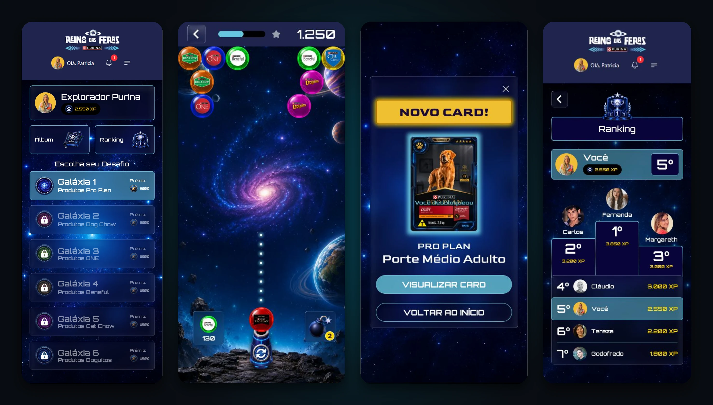
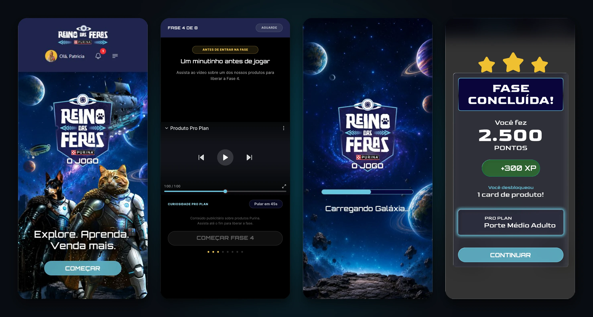
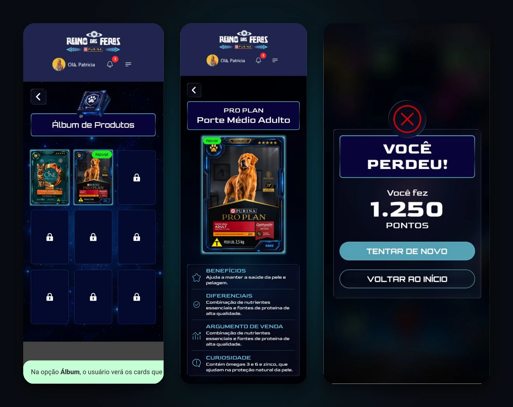

Treinamento de produto transformado em jornada de jogo, com cards colecionáveis que levam o argumento de venda para o balcão.
O Reino das Feras é uma camada de gamificação criada dentro de uma plataforma existente da Agência Digi para a Purina. O vendedor se torna um explorador que atravessa galáxias temáticas espaciais, ganha XP, disputa posições no ranking e coleciona conhecimento prático e argumentos de venda prontos para cada linha de produtos do portfólio.

Seis linhas de produto, cada uma com diferenciais e atributos próprios. Para quem está no ponto de venda (PDV), decorar fichas técnicas frias não basta: é preciso saber o que dizer ao cliente, na hora certa. O desafio foi criar uma experiência que fizesse esse conhecimento circular por vontade própria, sem parecer um treinamento obrigatório e cansativo.
Pro Plan, Dog Chow, ONE, Beneful, Cat Chow e Doguitos para aprender, diferenciar e recomendar em meio à rotina acelerada da loja.
Treinamentos corporativos pontuais são esquecidos. A plataforma precisava de um loop de recompensas que desse motivo para retornar toda semana.
A informação precisava chegar já no formato acionável de uso: benefícios centrais, diferenciais chave e um argumento de venda pronto.
Um jogo sozinho apenas entretém, mas não fecha vendas. A decisão central foi tratar a vitória no mini-game como porta de entrada para o conteúdo pedagógico: cada fase concluída entrega um card colecionável de produto, e é o card que carrega o valor de negócio da marca.
Uma dinâmica casual conhecida deixa o esforço cognitivo livre para o que importa: reter os atributos dos produtos.
Cada galáxia representa uma linha de produtos e só é destravada após a anterior, garantindo que todo o portfólio seja percorrido.
Benefícios, diferenciais, argumento de venda pronto e uma curiosidade por produto, guardados permanentemente no álbum.
O mini-game capta a atenção inicial e ativa o senso de desafio; a conclusão premia o vendedor com XP e cards colecionáveis que sintetizam os argumentos comerciais para uso direto no atendimento ao cliente.
O jogo vive organicamente dentro da plataforma corporativa, não como um aplicativo desconectado. Duas entradas levam ao mesmo ponto, e cada etapa alimenta a seguinte em um ciclo virtuoso de recompensa e retenção:
Banner hero na Home com link direto para o jogo e item no menu lateral, para quem prefere navegar pela estrutura da plataforma.
O Explorador vê seu XP atual, as seis galáxias com prêmios e atalhos rápidos para o álbum de cards e o ranking geral.
Um micro-vídeo dinâmico sobre o produto da galáxia, seguido de uma tela de carregamento temática imersiva.
O menu superior da plataforma desaparece durante o jogo para ampliar a área útil e evitar toques acidentais.
Vitória entrega XP e desbloqueia um novo card. A derrota possui tela acolhedora própria, com opção de revanche rápida.
Álbum de produtos conquistados sempre à mão para consulta rápida no balcão e ranking disputado com todos os exploradores.
Um universo espacial que confere identidade lúdica à experiência, desenhado com hierarquia precisa para que o conteúdo pedagógico do produto nunca se perca dentro do apelo visual do jogo:



Com o prazo enxuto de uma semana, o foco foi entregar o ciclo completo de ponta a ponta e fechar cada ponto de contato com consistência, em vez de aprofundar apenas um recorte isolado:
Reaproveitar uma dinâmica clássica que o público já domina economizou tempo precioso de design e aprendizado, concentrando toda a atenção nos produtos Purina.
O menu superior da plataforma corporativa desaparece durante o jogo. Menos elementos concorrentes, mais área útil e menor probabilidade de toques acidentais.
Fases travadas constroem um senso tangível de jornada e evitam que o vendedor pule as linhas de produtos menos conhecidas ou de nicho.
Quem perde encontra a pontuação feita e duas saídas claras (revanche ou voltar). Frustração sem saída é o principal motivo de abandono de jogo.
O projeto foi concluído e entregue em fase de pré-lançamento para a Purina. O produto valida a tese de que a gamificação bem estruturada transforma o treinamento corporativo de uma tarefa monótona em um ritual engajador de alto retorno comercial.